CODING AGENTS AS PIXEL WORLD MODELS
traex/DeepSeek-V4.1-Flash · phygen_018
点击播放 · 原生 RGB 像素
逐轮保存的候选
回放视频、检查图与代码变化。
每份候选均可单独播放。实际图片检查记录在下方工具轨迹中。
候选 01播放与检查图
点击播放 · 原生 RGB 像素

展开代码变化
--- 上一保存版本
+++ 本次保存版本
@@ -0,0 +1,214 @@
+"""Procedural timelapse: vacuum extraction collapses a sealed plastic ball."""
+
+from pathlib import Path
+
+import numpy as np
+from PIL import Image, ImageDraw, ImageFilter
+
+import artifact_io
+
+
+W, H, N, FPS = 256, 144, 20, 4.0
+CASE = Path(__file__).resolve().parent
+
+
+def smoothstep(a, b, x):
+ t = np.clip((x - a) / (b - a), 0.0, 1.0)
+ return t * t * (3.0 - 2.0 * t)
+
+
+def canvas():
+ yy, xx = np.mgrid[0:H, 0:W].astype(np.float32)
+ # A cool graphite cyclorama with a warm pool of studio light.
+ t = np.clip(yy / (H - 1), 0.0, 1.0)
+ base = np.empty((H, W, 3), np.float32)
+ base[:] = (18, 24, 30)
+ base *= (0.62 + 0.55 * t[..., None])
+ glow = np.exp(-(((xx - 125) / 145) ** 2 + ((yy - 35) / 100) ** 2))
+ base += glow[..., None] * np.array([31, 30, 26], np.float32)
+ vignette = 1.0 - 0.48 * (((xx - W * .5) / (W * .57)) ** 2 + ((yy - H * .47) / (H * .66)) ** 2)
+ base *= np.clip(vignette[..., None], 0.25, 1.0)
+ return base
+
+
+BASE = canvas()
+
+
+def add_soft_shape(img, mask, color, blur=3.0):
+ layer = Image.fromarray(np.clip(mask * 255, 0, 255).astype(np.uint8))
+ layer = layer.filter(ImageFilter.GaussianBlur(blur))
+ m = np.asarray(layer, np.float32)[..., None] / 255.0
+ return img * (1.0 - m) + np.asarray(color, np.float32) * m
+
+
+def background(seed=0):
+ img = BASE.copy()
+ rng = np.random.default_rng(seed + 27)
+ yy, xx = np.mgrid[0:H, 0:W].astype(np.float32)
+
+ # Table horizon and its diffuse reflection.
+ horizon = 102.0
+ table = smoothstep(horizon - 1.0, horizon + 1.0, yy)
+ wood = np.array([37, 29, 26], np.float32)
+ grain = 3.0 * np.sin(xx * .092 + yy * .022) + 2.0 * np.sin(xx * .037 - yy * .075)
+ wood_layer = wood + grain[..., None] * np.array([1.0, .72, .52], np.float32)
+ img = img * (1.0 - table[..., None] * .80) + wood_layer * table[..., None] * .80
+ edge = np.exp(-((yy - horizon) / 1.4) ** 2) * (xx > 12) * (xx < 244)
+ img += edge[..., None] * np.array([37, 28, 22], np.float32)
+
+ # Soft contact shadow.
+ contact = np.exp(-(((xx - 116) / 65) ** 2 + ((yy - 106) / 10) ** 2))
+ img *= (1.0 - contact[..., None] * .50)
+
+ # Fine dust/scratches give the empty tabletop scale.
+ for _ in range(42):
+ x = rng.uniform(5, 251)
+ y = rng.uniform(107, 142)
+ a = rng.uniform(.025, .08)
+ length = rng.uniform(1.0, 6.0)
+ img[int(y):int(y)+1, int(x):min(W, int(x + length))] += a * 255
+ return img
+
+
+def sphere_map(x, y, cx, cy, r):
+ nx = (x - cx) / r
+ ny = (y - cy) / r
+ q = nx * nx + ny * ny
+ nz = np.sqrt(np.clip(1.0 - q, 0.0, 1.0))
+ return nx, ny, nz
+
+
+def ball_mask_and_depth(cx, cy, rx, ry):
+ yy, xx = np.mgrid[0:H, 0:W].astype(np.float32)
+ nx = (xx - cx) / rx
+ ny = (yy - cy) / ry
+ q = nx * nx + ny * ny
+ mask = smoothstep(1.0, 1.0 - 1.8 / min(rx, ry), np.sqrt(q))
+ return nx, ny, np.sqrt(np.clip(1.0 - q, 0.0, 1.0)), mask
+
+
+def draw_ball(img, p, frame):
+ yy, xx = np.mgrid[0:H, 0:W].astype(np.float32)
+ cx = 116.0 + 1.0 * p
+ cy = 76.0 + 1.2 * p
+ rx = 45.0 - 2.0 * p
+ ry = 43.5 - 1.0 * p
+
+ # Elliptical vacuum deformation and high-frequency plastic wrinkles.
+ nx0 = (xx - cx) / rx
+ ny0 = (yy - cy) / ry
+ theta = np.arctan2(ny0, nx0)
+ radial = np.sqrt(nx0 * nx0 + ny0 * ny0)
+ dent_center = -0.46
+ dent_width = 0.52 + .08 * p
+ dent = np.exp(-((theta - dent_center) / dent_width) ** 2)
+ ring = np.exp(-((radial - .68) / .20) ** 2)
+ fold = dent * ring * (0.085 * p ** 1.4)
+ fold += .034 * p * np.sin(9.0 * theta + 1.4 * radial + 0.8 * p) * smoothstep(.42, .94, radial) * (0.4 + dent)
+ scale_x = 1.0 - fold * (0.65 + .35 * (nx0 < 0))
+ scale_y = 1.0 + fold * .25
+ nx = nx0 / scale_x
+ ny = ny0 / scale_y
+ q = nx * nx + ny * ny
+ inside = smoothstep(1.0, 1.0 - 2.2 / min(rx, ry), np.sqrt(q))
+ nz = np.sqrt(np.clip(1.0 - q, 0.0, 1.0))
+
+ # Wrinkle normals bend the reflection, which is what sells thin polymer.
+ bump = (np.sin(theta * 10.0 + 0.7 + p) * .017 * p * smoothstep(.48, 1.0, radial)
+ + np.sin(theta * 17.0 - radial * 9.0) * .008 * p)
+ nxs = nx + bump * (-ny0)
+ nys = ny + bump * nx0
+ nzs = np.sqrt(np.clip(1.0 - nxs * nxs - nys * nys, .02, 1.0))
+
+ # Transparent body: tinted refraction, rim, and dark back wall.
+ rim = np.clip(1.0 - nz, 0, 1) ** 2.2
+ fresnel = .08 + .92 * rim
+ bend_x = np.clip((xx + nxs * 7.0).astype(int), 0, W - 1)
+ bend_y = np.clip((yy + nys * 5.0 + 2.0).astype(int), 0, H - 1)
+ refracted = img[bend_y, bend_x] * np.array([.92, 1.0, 1.03], np.float32)
+ body_tint = np.array([39, 69, 74], np.float32) * (0.65 + .35 * nzs[..., None])
+ body = refracted * .58 + body_tint * .28
+ body *= (1.0 - .45 * (ny > .15)[..., None] * smoothstep(.3, .9, radial)[..., None])
+ body += fresnel[..., None] * np.array([67, 101, 102], np.float32) * .38
+
+ # Warm window reflection on upper left, narrow cool rim on right.
+ lx, ly, lz = -.46, -.69, .56
+ spec1 = np.clip(nxs * lx + nys * ly + nzs * lz, 0, 1) ** 34
+ broad1 = np.clip(nxs * lx + nys * ly + nzs * lz, 0, 1) ** 4
+ body += broad1[..., None] * np.array([78, 65, 48], np.float32) * .55
+ body += spec1[..., None] * np.array([255, 230, 186], np.float32) * .85
+ strip = np.exp(-((nx0 + .38) / .09) ** 2) * smoothstep(-.75, -.05, ny0) * smoothstep(.58, .05, ny0)
+ body += strip[..., None] * np.array([142, 125, 92], np.float32) * .28
+ edge_light = np.exp(-((nx0 - .82) / .10) ** 2) * smoothstep(.65, -.5, ny0)
+ body += edge_light[..., None] * np.array([90, 147, 158], np.float32) * .60
+
+ # Dark seam-like shadow at lower rear edge.
+ rear = smoothstep(.45, 1.0, ny0) * smoothstep(-.85, .1, nx0)
+ body *= (1.0 - .19 * rear[..., None])
+ img = img * (1.0 - inside[..., None]) + body * inside[..., None]
+
+ # Neck/stopper at upper right, partially occluded by the hose.
+ neck_x, neck_y = cx + rx * .73, cy - ry * .70
+ neck = np.exp(-(((xx - neck_x) / 9.5) ** 2 + ((yy - neck_y) / 5.2) ** 2))
+ neck_ring = np.exp(-((((xx-neck_x)/11.0)**2 + ((yy-neck_y)/6.4)**2 - 1.0) / .22)**2)
+ img = img * (1 - neck[..., None] * .60) + np.array([45, 77, 80], np.float32) * neck[..., None] * .60
+ img += neck_ring[..., None] * np.array([91, 129, 129], np.float32) * .28
+
+ # Contact caustic on tabletop.
+ shadow = np.exp(-(((xx - cx) / (rx*.92)) ** 2 + ((yy - 106) / 7.0) ** 2))
+ img *= 1.0 - shadow[..., None] * .35
+ caus = np.exp(-(((xx - (cx+7)) / 24.0) ** 2 + ((yy - 104) / 3.2) ** 2))
+ img += caus[..., None] * np.array([49, 38, 26], np.float32)
+ return img
+
+
+def draw_hose(img, p, frame):
+ yy, xx = np.mgrid[0:H, 0:W].astype(np.float32)
+ # Hose runs from the neck off the upper-right edge.
+ x0, y0 = 150.0, 45.0
+ x1, y1 = 272.0, 3.0
+ t = np.clip((xx - x0) / (x1 - x0), 0, 1)
+ path_y = y0 + (y1 - y0) * t - 7.0 * np.sin(t * np.pi)
+ wobble = (0.55 + 1.2 * p) * np.sin(frame * 1.85 + t * 17.0) * t * (1-t)
+ distance = np.abs(yy - path_y - wobble)
+ thickness = 9.3 - 1.0 * t
+ hose = smoothstep(thickness + .7, thickness - .7, distance) * (xx >= x0 - 1) * (xx <= x1)
+ # Hose body with dark ridges and lit top edge.
+ ridge = .5 + .5 * np.sin((xx * .86 + yy * .14) * 2.0 + frame * .15)
+ body = np.array([21, 28, 29], np.float32)[None, None, :] + ridge[..., None] * np.array([22, 26, 23], np.float32)
+ top = smoothstep(1.4, -3.2, yy - path_y - wobble)
+ body += top[..., None] * np.array([58, 61, 50], np.float32) * .45
+ img = img * (1.0 - hose[..., None]) + body * hose[..., None]
+
+ # Metallic collar at the plastic neck.
+ collar = np.exp(-(((xx - 148.0) / 5.0) ** 2 + ((yy - 45.5) / 9.3) ** 2) ** 2)
+ img = img * (1 - collar[..., None] * .82) + np.array([63, 72, 69], np.float32) * collar[..., None] * .82
+ img += np.exp(-(((xx-145.5)/1.5)**2 + ((yy-45.0)/7.0)**2))[..., None] * np.array([100,112,104], np.float32) * .55
+ return img
+
+
+def render(frame):
+ p = float(smoothstep(0.0, N - 1, frame))
+ img = background(frame)
+ img = draw_hose(img, p, frame)
+ img = draw_ball(img, p, frame)
+
+ # Lens softness, subtle bloom, and restrained filmic finish.
+ pil = Image.fromarray(np.clip(img, 0, 255).astype(np.uint8))
+ blur = np.asarray(pil.filter(ImageFilter.GaussianBlur(2.4)), np.float32)
+ img = img * .86 + blur * .14
+ yy, xx = np.mgrid[0:H, 0:W].astype(np.float32)
+ flare = np.exp(-(((xx - 87) / 56) ** 2 + ((yy - 48) / 36) ** 2))
+ img += flare[..., None] * np.array([7, 7, 5], np.float32)
+ img = 255.0 * np.power(np.clip(img / 255.0, 0, 1), .92)
+ return np.clip(img, 0, 255).astype(np.uint8)
+
+
+def main():
+ frames = np.stack([render(i) for i in range(N)])
+ artifact_io.save(frames, CASE)
+ print("saved", frames.shape, "to", CASE)
+
+
+if __name__ == "__main__":
+ main()
候选 02播放与检查图
点击播放 · 原生 RGB 像素
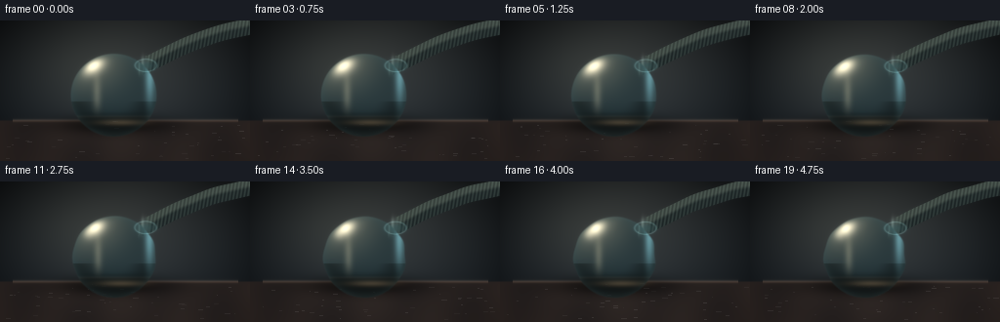
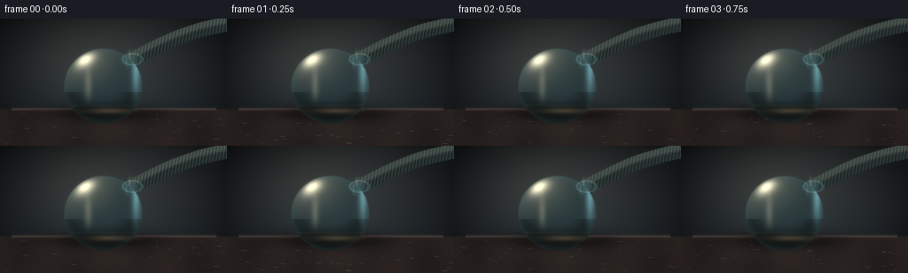
展开代码变化
--- 上一保存版本
+++ 本次保存版本
@@ -94,28 +94,31 @@
rx = 45.0 - 2.0 * p
ry = 43.5 - 1.0 * p
- # Elliptical vacuum deformation and high-frequency plastic wrinkles.
+ # The left wall bows toward the extraction neck; the skin then develops
+ # compression folds as it loses volume. The rim stays nearly circular.
nx0 = (xx - cx) / rx
ny0 = (yy - cy) / ry
theta = np.arctan2(ny0, nx0)
radial = np.sqrt(nx0 * nx0 + ny0 * ny0)
- dent_center = -0.46
- dent_width = 0.52 + .08 * p
- dent = np.exp(-((theta - dent_center) / dent_width) ** 2)
- ring = np.exp(-((radial - .68) / .20) ** 2)
- fold = dent * ring * (0.085 * p ** 1.4)
- fold += .034 * p * np.sin(9.0 * theta + 1.4 * radial + 0.8 * p) * smoothstep(.42, .94, radial) * (0.4 + dent)
- scale_x = 1.0 - fold * (0.65 + .35 * (nx0 < 0))
- scale_y = 1.0 + fold * .25
- nx = nx0 / scale_x
- ny = ny0 / scale_y
+ dent_center = 2.82
+ dent_width = .46 + .07 * p
+ dent = np.exp(-((np.arctan2(np.sin(theta-dent_center), np.cos(theta-dent_center))) / dent_width) ** 2)
+ inner = smoothstep(.18, .98, radial)
+ # A deep, asymmetrical inward crease rather than a uniform scale.
+ displacement = (0.21 * p ** 1.55 * dent * (radial ** 1.3)
+ + 0.045 * p * np.exp(-((theta - 2.20) / .25) ** 2) * radial ** 1.7)
+ wrinkles = (.050 * p ** 1.3 * np.sin(13.5 * theta + 4.4 * radial - 1.5 * p)
+ * inner * smoothstep(2.15, 3.15, theta))
+ nx = nx0 - displacement * (-np.sin(theta)) + wrinkles * (-np.sin(theta))
+ ny = ny0 - displacement * np.cos(theta) + wrinkles * np.cos(theta)
q = nx * nx + ny * ny
inside = smoothstep(1.0, 1.0 - 2.2 / min(rx, ry), np.sqrt(q))
nz = np.sqrt(np.clip(1.0 - q, 0.0, 1.0))
# Wrinkle normals bend the reflection, which is what sells thin polymer.
- bump = (np.sin(theta * 10.0 + 0.7 + p) * .017 * p * smoothstep(.48, 1.0, radial)
- + np.sin(theta * 17.0 - radial * 9.0) * .008 * p)
+ bump = (np.sin(theta * 13.5 + radial * 4.4) * .045 * p * smoothstep(.35, .95, radial)
+ * smoothstep(2.1, 3.05, theta)
+ + np.sin(theta * 21.0 - radial * 12.0) * .014 * p * smoothstep(.55, 1.0, radial))
nxs = nx + bump * (-ny0)
nys = ny + bump * nx0
nzs = np.sqrt(np.clip(1.0 - nxs * nxs - nys * nys, .02, 1.0))
@@ -126,8 +129,9 @@
bend_x = np.clip((xx + nxs * 7.0).astype(int), 0, W - 1)
bend_y = np.clip((yy + nys * 5.0 + 2.0).astype(int), 0, H - 1)
refracted = img[bend_y, bend_x] * np.array([.92, 1.0, 1.03], np.float32)
- body_tint = np.array([39, 69, 74], np.float32) * (0.65 + .35 * nzs[..., None])
- body = refracted * .58 + body_tint * .28
+ body_tint = np.array([47, 70, 70], np.float32) * (0.65 + .35 * nzs[..., None])
+ body = refracted * .52 + body_tint * .31
+ body *= np.array([1.06, 1.02, .96], np.float32)
body *= (1.0 - .45 * (ny > .15)[..., None] * smoothstep(.3, .9, radial)[..., None])
body += fresnel[..., None] * np.array([67, 101, 102], np.float32) * .38
@@ -135,12 +139,17 @@
lx, ly, lz = -.46, -.69, .56
spec1 = np.clip(nxs * lx + nys * ly + nzs * lz, 0, 1) ** 34
broad1 = np.clip(nxs * lx + nys * ly + nzs * lz, 0, 1) ** 4
- body += broad1[..., None] * np.array([78, 65, 48], np.float32) * .55
- body += spec1[..., None] * np.array([255, 230, 186], np.float32) * .85
+ body += broad1[..., None] * np.array([86, 71, 50], np.float32) * .55
+ body += spec1[..., None] * np.array([255, 231, 190], np.float32) * .78
strip = np.exp(-((nx0 + .38) / .09) ** 2) * smoothstep(-.75, -.05, ny0) * smoothstep(.58, .05, ny0)
body += strip[..., None] * np.array([142, 125, 92], np.float32) * .28
edge_light = np.exp(-((nx0 - .82) / .10) ** 2) * smoothstep(.65, -.5, ny0)
- body += edge_light[..., None] * np.array([90, 147, 158], np.float32) * .60
+ body += edge_light[..., None] * np.array([103, 142, 143], np.float32) * .48
+
+ # Compressed material gathers in a luminous, soft crease.
+ crease = np.exp(-((theta - 2.57) / .13) ** 2) * smoothstep(.45, .78, radial) * p
+ body += crease[..., None] * np.array([84, 95, 78], np.float32) * .50
+ body -= np.exp(-((theta - 2.38) / .10) ** 2)[..., None] * smoothstep(.50, .80, radial)[..., None] * p * np.array([28, 25, 18], np.float32)
# Dark seam-like shadow at lower rear edge.
rear = smoothstep(.45, 1.0, ny0) * smoothstep(-.85, .1, nx0)
候选 03播放与检查图

候选 04播放与检查图
点击播放 · 原生 RGB 像素

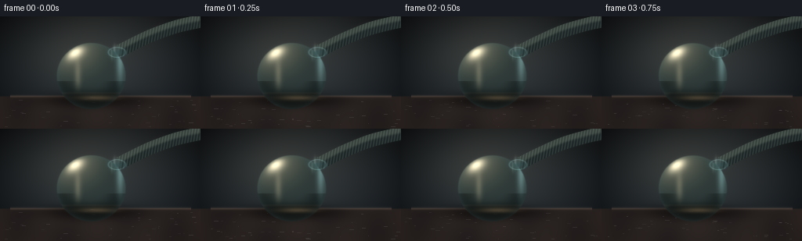
展开代码变化
--- 上一保存版本
+++ 本次保存版本
@@ -111,8 +111,12 @@
* inner * smoothstep(2.15, 3.15, theta))
nx = nx0 - displacement * (-np.sin(theta)) + wrinkles * (-np.sin(theta))
ny = ny0 - displacement * np.cos(theta) + wrinkles * np.cos(theta)
- q = nx * nx + ny * ny
- inside = smoothstep(1.0, 1.0 - 2.2 / min(rx, ry), np.sqrt(q))
+ # The exterior silhouette loses volume too, with a pronounced flat spot
+ # on the collapsing wall and a small pinch around the extraction port.
+ port_pinch = np.exp(-((np.arctan2(np.sin(theta + .72), np.cos(theta + .72))) / .34) ** 2)
+ boundary = 1.0 - .050 * p - .078 * p * dent - .036 * p * port_pinch
+ q = (nx * nx + ny * ny) / (boundary * boundary)
+ inside = smoothstep(boundary, boundary - 2.2 / min(rx, ry), np.sqrt(nx*nx+ny*ny))
nz = np.sqrt(np.clip(1.0 - q, 0.0, 1.0))
# Wrinkle normals bend the reflection, which is what sells thin polymer.
可观测工具轨迹
实际执行的命令与返回图片。
命令 1exit 0
/bin/bash -c "pwd && rg --files -g '"'!*.mp4'"' -g '"'!*.mov'"' -g '"'!*.webm'"' | sort | sed -n '1,200p'"
命令 2exit 0
/bin/bash -c "sed -n '1,240p' prompt.txt"
命令 3exit 0
/bin/bash -c "sed -n '1,260p' GENERATION_RULES.md"
命令 4exit 0
/bin/bash -c 'cat task_spec.json'
命令 5exit 0
/bin/bash -c "sed -n '1,260p' artifact_io.py"
命令 6exit 0
/bin/bash -c "python - <<'PY'
import numpy, PIL
print('numpy', numpy.__version__)
print('PIL', PIL.__version__)
try:
import imageio
print('imageio', imageio.__version__)
except Exception as e: print('no imageio', e)
PY"命令 7exit 0
/bin/bash -c 'command -v ffmpeg || true; command -v convert || true'
命令 8exit 0
/bin/bash -c 'git status --short 2>/dev/null || true'
命令 9exit 0
/bin/bash -c "python - <<'PY'
try:
import scipy
print('scipy', scipy.__version__)
except Exception as e: print('no scipy', e)
PY"命令 10exit 0
/bin/bash -c 'python generate.py'
命令 11exit 0
/bin/bash -c "python - <<'PY'
from PIL import Image
im=Image.open('frames/19.png')
im.resize((1024,576),Image.Resampling.NEAREST).save('.tmp/final_up.png')
PY"命令 12exit 0
/bin/bash -c 'python generate.py'
命令 13exit 0
/bin/bash -c "python - <<'PY'
from PIL import Image
for i in (0,9,14,19):
im=Image.open(f'frames/{i:02d}.png')
im.resize((1024,576),Image.Resampling.LANCZOS).save(f'.tmp/up{i}.png')
PY"命令 14exit 0
/bin/bash -c "python - <<'PY'
from PIL import Image
im=Image.open('frames/19.png')
im.crop((55,25,180,115)).resize((750,540),Image.Resampling.NEAREST).save('.tmp/crop19.png')
PY"命令 15exit 0
/bin/bash -c "python - <<'PY'
from PIL import Image
im=Image.open('frames/00.png')
im.crop((55,25,180,115)).resize((750,540),Image.Resampling.NEAREST).save('.tmp/crop00.png')
PY"命令 16exit 0
/bin/bash -c "python - <<'PY'
import numpy as np
from PIL import Image, ImageDraw
frames=[np.asarray(Image.open(f'frames/{i:02d}.png'),dtype=np.float32) for i in range(20)]
d=[np.abs(frames[i]-frames[i-1]).mean() for i in range(1,20)]
print('mean frame delta', np.round(d,3))
print('min/max', min(d), max(d))
print('brightness', [round(float(f.mean()),2) for f in frames[::4]])
PY"命令 17exit 0
/bin/bash -c "python - <<'PY'
import numpy as np
from PIL import Image
for i in (0,6,12,19):
a=np.asarray(Image.open(f'frames/{i:02d}.png'),dtype=np.int16)
# silhouette proxy: low/high contrast boundary region, inspect object bbox by difference from background frame 0
if i:
b=np.asarray(Image.open('frames/00.png'),dtype=np.int16)
print(i, 'changed pixels', int((np.abs(a-b).max(2)>10).sum()))
PY"命令 18exit 0
/bin/bash -c "python - <<'PY'
from PIL import Image,ImageDraw
import numpy as np
ims=[Image.open(f'frames/{i:02d}.png') for i in range(20)]
sheet=Image.new('RGB',(256*5, (144+18)*4),(20,23,28)); d=ImageDraw.Draw(sheet)
for k,i in enumerate([0,5,10,15,19,2,7,12,17,19,1,6,11,16,19,3,8,13,18,19]):
x=(k%5)*256;y=(k//5)*162
d.text((x+4,y+2),f'{i:02d}',fill='white');sheet.paste(ims[i],(x,y+18))
sheet.save('.tmp/contact.png')
PY"命令 19exit 0
/bin/bash -c 'python generate.py'
命令 20exit 0
/bin/bash -c "python - <<'PY'
from PIL import Image
im=Image.open('frames/19.png')
im.crop((50,20,180,115)).resize((780,570),Image.Resampling.LANCZOS).save('.tmp/finalcrop2.png')
PY"命令 21exit 0
/bin/bash -c "python - <<'PY'
import numpy as np
from PIL import Image
for i in [0,5,10,15,19]:
a=np.asarray(Image.open(f'frames/{i:02d}.png'),dtype=np.int16)
# approximate translucent-ball footprint bounds via bright/cyan deviations from a fixed dark local patch
# just report difference from first frame in central region
if i:
b=np.asarray(Image.open('frames/00.png'),dtype=np.int16)
d=np.abs(a-b).max(2)
ys,xs=np.where(d>8)
print(i, (xs.min(),ys.min(),xs.max(),ys.max()), len(xs))
PY"命令 22exit 0
/bin/bash -c "python - <<'PY'
import numpy as np
from PIL import Image
A=np.asarray(Image.open('frames/00.png'),dtype=np.float32)
B=np.asarray(Image.open('frames/19.png'),dtype=np.float32)
# central difference visualization
D=np.abs(B-A).max(2)
print('mean diff region',D[25:110,60:175].mean(),'max',D.max())
PY"命令 23exit 0
/bin/bash -c "python - <<'PY'
import numpy as np
from PIL import Image
for i in (0,19):
a=np.asarray(Image.open(f'frames/{i:02d}.png'),dtype=np.float32)
# print horizontal color runs around ball center
for y in (30,40,60,80,95,104):
row=a[y]
print(i,y, 'left',np.round(row[60:76].mean(0),1), 'mid',np.round(row[100:110].mean(0),1),'right',np.round(row[150:166].mean(0),1))
PY"命令 24exit 0
/bin/bash -c "python - <<'PY'
from PIL import Image
import numpy as np
im=np.asarray(Image.open('frames/19.png'))
# crop visualization of luminance difference from frame 0, amplified
A=np.asarray(Image.open('frames/00.png'),dtype=np.float32)
B=im.astype(np.float32)
D=np.abs(B-A).max(2)
D=np.clip(D*3,0,255).astype(np.uint8)
Image.fromarray(D).resize((1024,576),Image.Resampling.NEAREST).save('.tmp/diff.png')
PY"命令 25exit 1
/bin/bash -c "python -m py_compile generate.py && python - <<'PY'
from pathlib import Path
import json
import numpy as np
from PIL import Image
p=Path('.')
spec=json.loads((p/'task_spec.json').read_text())
with np.load(p/'pixels.npz') as z:
a=z['pixels']
print('tensor', a.shape, a.dtype, 'range', int(a.min()), int(a.max()))
files=sorted((p/'frames').glob('*.png'))
print('frames', len(files), 'sizes', sorted({Image.open(f).size for f in files}))
print('player', (p/'index.html').stat().st_size, 'bytes')
print('inspection', Image.open(p/'inspection.png').size)
assert a.shape == (spec['frames'], spec['height'], spec['width'])
assert len(files) == spec['frames']
PY"命令 26exit 1
/bin/bash -c "python - <<'PY'
from pathlib import Path
import json
import numpy as np
from PIL import Image
p=Path('.')
spec=json.loads((p/'task_spec.json').read_text())
with np.load(p/'pixels.npz') as z:
packed=z['pixels']
assert packed.shape == (spec['height'], spec['width'], spec['frames']), packed.shape
rgb=np.stack([(packed>>16)&255,(packed>>8)&255,packed&255],axis=-1)
files=sorted((p/'frames').glob('*.png'))
assert len(files)==spec['frames']
for i,f in enumerate(files):
a=np.asarray(Image.open(f))
assert np.array_equal(a,rgb[...,i].astype(np.uint8)), i
print('PASS: 20 RGB frames, 256x144, packed tensor matches every PNG')
print('artifacts:', ', '.join(x.name for x in sorted(p.glob('*')) if x.is_file()))
PY"命令 27exit 1
/bin/bash -c "python - <<'PY'
from PIL import Image
import numpy as np
with np.load('pixels.npz') as z: p=z['pixels']
r=np.stack([(p>>16)&255,(p>>8)&255,p&255],axis=-1).astype(np.uint8)
a=np.asarray(Image.open('frames/00.png'))
print(a.shape,r.shape)
print('equal',np.array_equal(a,r[...,0]),'diff',np.abs(a.astype(int)-r[...,0].astype(int)).max(), 'n',(a"'!=r[...,0]).sum())
print('"'png',a[0,:5]);print('npz',r[0,:5,0])
print('p',p[0,:5,0])
PY"命令 28exit 1
/bin/bash -c "python - <<'PY'
from pathlib import Path
import json
import numpy as np
from PIL import Image
p=Path('.')
spec=json.loads((p/'task_spec.json').read_text())
with np.load(p/'pixels.npz') as z:
packed=z['pixels']
assert packed.shape == (spec['height'], spec['width'], spec['frames']), packed.shape
rgb=np.stack([(packed>>16)&255,(packed>>8)&255,packed&255],axis=-1).astype(np.uint8)
files=sorted((p/'frames').glob('*.png'))
assert len(files)==spec['frames']
for i,f in enumerate(files):
a=np.asarray(Image.open(f))
assert np.array_equal(a,rgb[...,i]), i
print('PASS: 20 RGB frames, 256x144, packed tensor matches every PNG')
print('artifacts:', ', '.join(x.name for x in sorted(p.glob('*')) if x.is_file()))
PY"命令 29exit 1
/bin/bash -c "python - <<'PY'
from PIL import Image
import numpy as np
with np.load('pixels.npz') as z: p=z['pixels']
r=np.stack([(p>>16)&255,(p>>8)&255,p&255],axis=-1).astype(np.uint8)
a=np.asarray(Image.open('frames/00.png'))
print(a.shape,r.shape)
print('equal',np.array_equal(a,r[...,0]),'diff',np.abs(a.astype(int)-r[...,0].astype(int)).max(), 'n',(a"'!=r[...,0]).sum())
print('"'png',a[0,:5]);print('npz',r[0,:5,0])
print('p',p[0,:5,0])
PY"命令 30exit 1
/bin/bash -c "python - <<'PY'
from PIL import Image
import numpy as np
with np.load('pixels.npz') as z: p=z['pixels']
r=np.stack([(p>>16)&255,(p>>8)&255,p&255],axis=-1).astype(np.uint8)
a=np.asarray(Image.open('frames/00.png'))
b=r[...,0]
print(a.shape,b.shape)
print('equal',np.array_equal(a,b),'diff',np.abs(a.astype(int)-b.astype(int)).max(), 'n',(a"'!=b).sum())
print('"'png',a[0,:5]);print('npz',b[0,:5])
print('p',p[0,:5,0])
PY"命令 31exit 0
/bin/bash -c "python - <<'PY'
from pathlib import Path
import json
import numpy as np
from PIL import Image
p=Path('.')
spec=json.loads((p/'task_spec.json').read_text())
with np.load(p/'pixels.npz') as z:
packed=z['pixels']
assert packed.shape == (spec['height'], spec['width'], spec['frames']), packed.shape
files=sorted((p/'frames').glob('*.png'))
assert len(files)==spec['frames']
for i,f in enumerate(files):
a=np.asarray(Image.open(f)).astype(np.uint32)
encoded=(a[...,0]<<16)|(a[...,1]<<8)|a[...,2]
assert np.array_equal(encoded,packed[...,i]), i
print('PASS: 20 RGB frames, 256x144, packed tensor matches every PNG')
print('artifacts:', ', '.join(x.name for x in sorted(p.glob('*')) if x.is_file()))
PY"命令 32exit 0
/bin/bash -c 'git status --short -- generate.py frames pixels.npz index.html inspection.png transition_check.png 2>/dev/null || true; du -sh frames pixels.npz index.html'
命令 33exit 0
/bin/bash -c 'git status --short 2>/dev/null | tail -20 || true'
命令 34exit 0
/bin/bash -c "python - <<'PY'
from PIL import Image
import numpy as np
A=np.asarray(Image.open('frames/00.png')).astype(float)
for i in [4,8,12,16,19]:
B=np.asarray(Image.open(f'frames/{i:02d}.png')).astype(float)
D=np.abs(B-A).max(2)
print(i, 'centroid', tuple(np.round(np.argwhere(D>12).mean(0),1)), 'count',int((D>12).sum()))
PY"命令 35exit 0
/bin/bash -c "python - <<'PY'
from PIL import Image
im=Image.open('frames/19.png')
im.crop((65,30,170,110)).resize((840,640),Image.Resampling.NEAREST).save('.tmp/finalpix.png')
PY"命令 36exit 0
/bin/bash -c "sed -n '1,260p' generate.py"
视觉工具实际返回图片 1

视觉工具实际返回图片 2
视觉工具实际返回图片 3
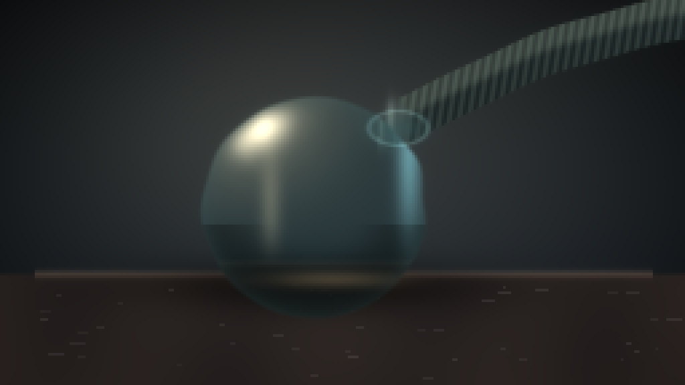
视觉工具实际返回图片 4
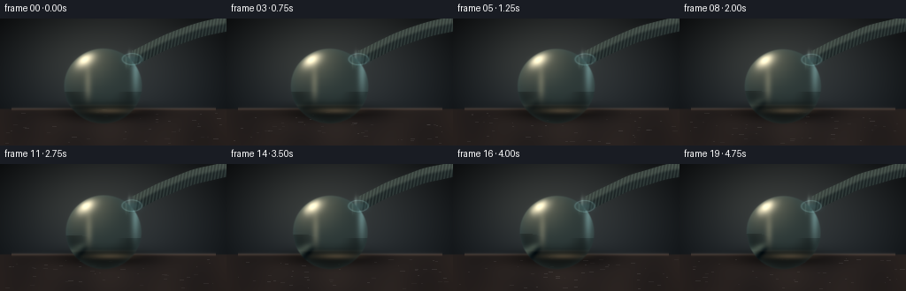
视觉工具实际返回图片 5
视觉工具实际返回图片 6
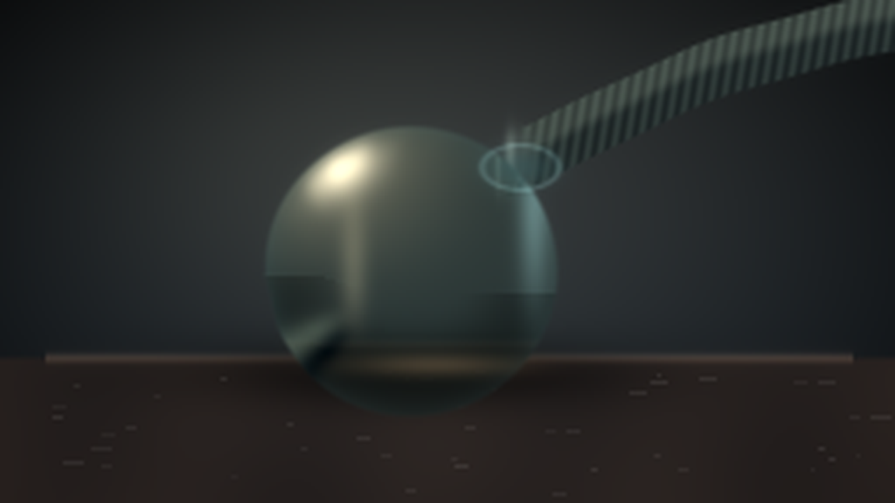
视觉工具实际返回图片 7
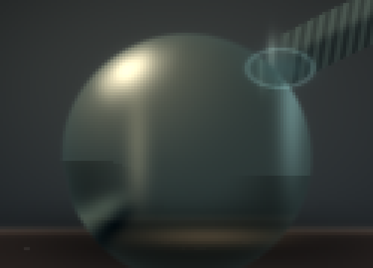
视觉工具实际返回图片 8
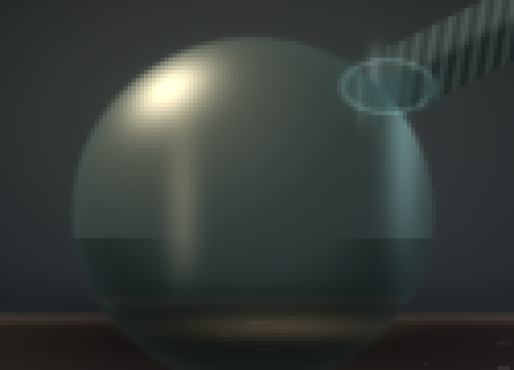
视觉工具实际返回图片 9
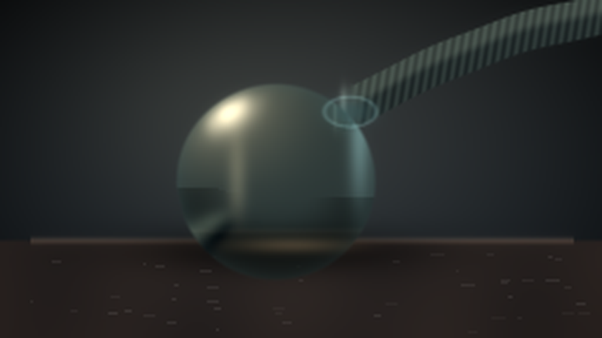
视觉工具实际返回图片 10
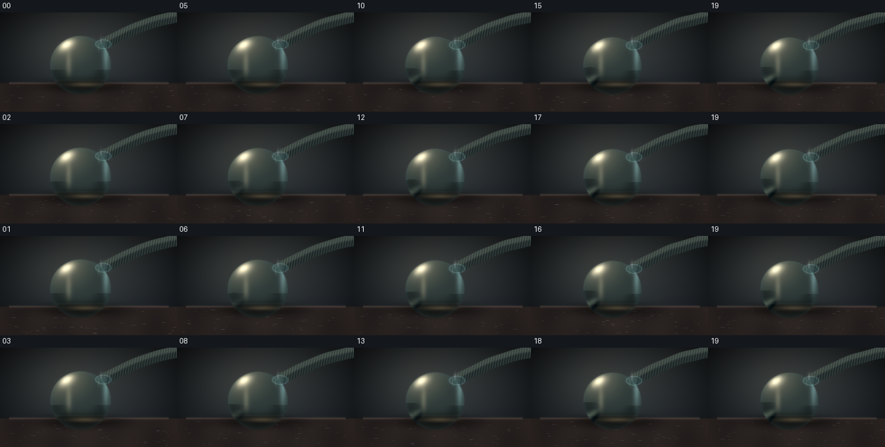
视觉工具实际返回图片 11
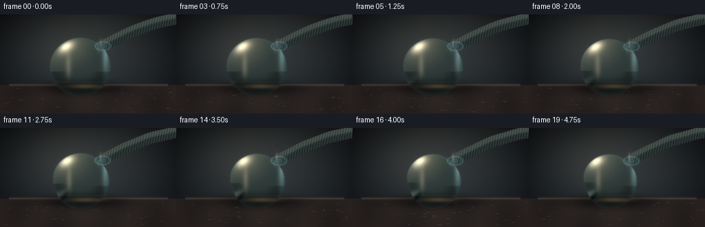
视觉工具实际返回图片 12
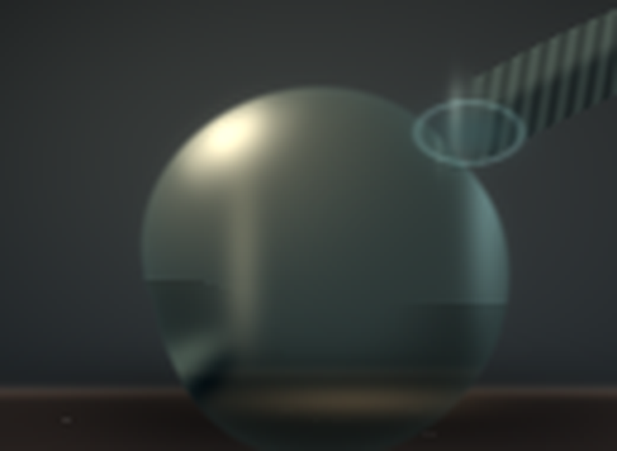
视觉工具实际返回图片 13
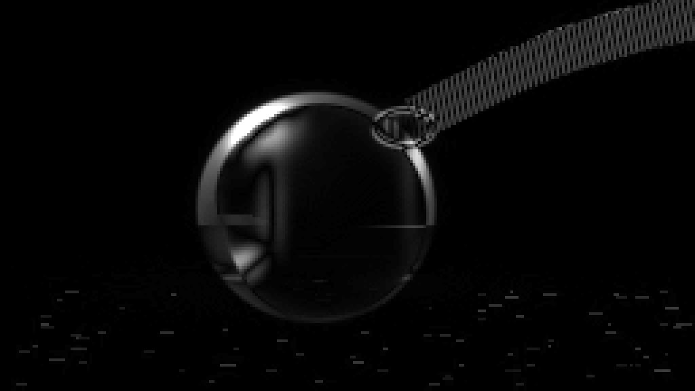
视觉工具实际返回图片 14
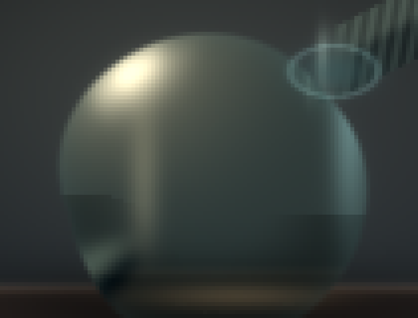
保存候选 4 份；完成命令 36 次；可验证图片返回 14 张。原始 API 响应与完整日志保留在本地。